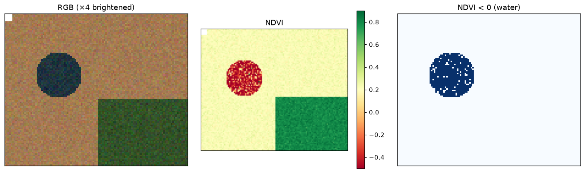
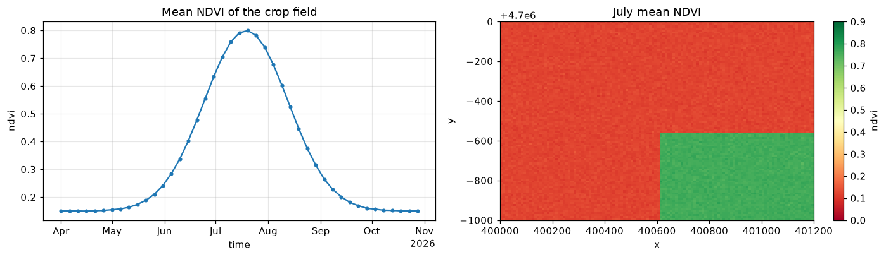
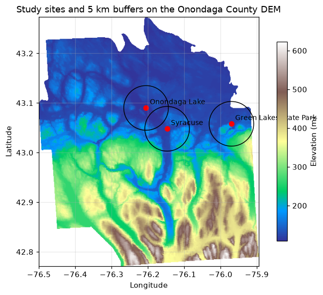

This module sets up the tools used for the rest of the course and introduces the building blocks every remote sensing workflow in Python relies on: NumPy arrays, labelled xarray objects, georeferencing with rioxarray, vector data with GeoPandas, lazy computation with Dask, and the CPU/GPU backend of GeoLattice’s remote sensing toolkit, geolattice.rsense.
Overview
This module sets up the tools used for the rest of the course and introduces the building blocks every remote sensing workflow in Python relies on: NumPy arrays, labelled xarray objects, georeferencing with rioxarray, vector data with GeoPandas, lazy computation with Dask, and the CPU/GPU backend of GeoLattice’s remote sensing toolkit, geolattice.rsense.
Core concepts
Learning objectives
Create a reproducible environment (conda or pip) with the geospatial stack and GeoLattice.
Check versions and hardware with rs.info() and choose a CPU or GPU backend.
Treat satellite images as NumPy arrays and xarray DataArrays/Datasets with coordinates.
Attach and inspect coordinate reference systems (CRS) and affine transforms, and mosaic raster tiles.
Build and reproject vector data with GeoPandas and Shapely.
Process rasters lazily and in tiles with Dask and rs.apply_tiled.
Compare CPU and GPU performance.
Organise a remote sensing project for reproducibility.
Onondaga County DEM tiles for mosaicking and GeoPandas
/LC09_L2SP_138043_20221216_20221223_02_T1/
Landsat 9 NIR band for lazy/Dask reads
Contents
Installing the environment
Checking the installation and hardware
CPU and GPU backends in geolattice.rsense
NumPy: images are arrays
xarray: arrays with coordinates
rioxarray: georeferencing
GeoPandas and Shapely: vector data
Dask and tiled processing for large rasters
Benchmarking CPU (and GPU) performance
Organising a project
Summary and exercises
Installing the environment
GeoLattice needs the compiled GDAL and PROJ libraries, with Python GDAL bindings that match the installed GDAL. Install those first (conda-forge or your system package manager), then install GeoLattice from its repository with the extras you need.
Option A: conda / mamba (recommended). Compiled geospatial libraries install most reliably from conda-forge. Save this as environment.yml next to your GeoLattice clone:
Google Colab. Upload or clone the GeoLattice repository into the session, then run !pip install -e "./GeoLattice[rsense,rsense-viz]" in the first cell. Choose Runtime → Change runtime type → GPU and add the rsense-gpu extra to use the GPU.
If import geolattice fails with libgdal.so... cannot open shared object file or No module named '_gdal', the GDAL bindings do not match the GDAL library; the Troubleshooting section of the GeoLattice README explains the fix.
Checking the installation and hardware
Installation. This notebook needs installation option 5 (core, spatial analysis, spatial statistics, geostatistics and remote sensing): pip install "geolattice[remote-sensing]". See “Installation options” in the GeoLattice README.
Code
# Setup for the Python geospatial environment notebook.## 1. Show plots inside the notebook, and hide noisy UserWarnings from matplotlib# and the geospatial libraries.# 2. Import the core stack: NumPy (arrays), pandas (tables), xarray (labelled# arrays), GeoPandas (vector data) and matplotlib (plots).# 3. Import geolattice and the remote-sensing package geolattice.rsense as rs.# 4. Set a sharp figure style, then print the package versions so the run is# reproducible.%matplotlib inlineimport warnings # warning controlwarnings.filterwarnings("ignore", category=UserWarning) # hide routine library warningsimport time # used later to time CPU vs GPU workfrom pathlib import Path # file and folder pathsimport numpy as np # arraysimport pandas as pd # tablesimport xarray as xr # labelled rastersimport geopandas as gpd # vector dataimport matplotlib.pyplot as plt # figuresimport geolattice # GeoLatticeimport geolattice.rsense as rs # GeoLattice remote sensing subpackage# figure resolution and a light gridplt.rcParams.update({"figure.dpi": 110, "axes.grid": True, "grid.alpha": 0.3})print("geolattice", geolattice.__version__, "| geolattice.rsense", rs.__version__) # versions
geolattice 0.3.49 | geolattice.rsense 0.3.49
rs.info() reports library versions and every compute device geolattice.rsense can see. Include it in bug reports. (The key pyrsense_backend keeps the name used by PyRSense, from which geolattice.rsense was ported.)
Code
# Inspect the current geolattice.rsense environment.## rs.info() returns a dictionary of versions and hardware (Python, NumPy, xarray,# rasterio, Dask, CuPy, and so on). The GPU list is printed in the next cell, so# it is left out of this table. Everything else becomes one column named "value".info = rs.info()# GeoLattice version plus every environment field except the GPU listtable = pd.Series({"geolattice": geolattice.__version__, **{k: v for k, v in info.items() if k !="gpus"}}, name="value")table.to_frame() # show as a table
value
geolattice
0.3.49
pyrsense_backend
cpu
available_backends
[cpu, cuda]
python
3.11.16
platform
Linux-7.0.0-44-generic-x86_64-with-glibc2.43
numpy
2.4.6
xarray
2026.7.0
dask
2026.7.1
rasterio
1.4.4
rioxarray
0.19.0
cupy
14.2.0
cucim
26.08.00
torch
2.14.0+cu132
Code
# List compute backends and any detected GPUs.## 1. rs.available_backends() reports which array libraries can run here (cpu,# and cuda when an NVIDIA GPU and CuPy are present).# 2. Each GPU entry has an id, a name, and free/total memory in gigabytes.# 3. If the list is empty, say so plainly.print("Available backends:", rs.available_backends())for gpu in info["gpus"] or []: # each detected GPU (none -> empty list)# its name and memoryprint(f"GPU {gpu['id']}: {gpu['name']}, {gpu['memory_total_gb']:.1f} GB total, {gpu['memory_free_gb']:.1f} GB free")ifnot info["gpus"]: # no GPU foundprint("GPUs: none detected") # say so
geolattice.rsense runs the same code on the CPU (NumPy) or an NVIDIA GPU (CuPy). You choose the backend once; every native algorithm then computes on it:
rs.set_backend("auto") picks CUDA if available, then Apple MPS (deep learning only), then CPU.
rs.set_backend("cuda:1") selects a specific GPU.
with rs.device("cuda"): ... switches temporarily.
On a machine without CUDA, requesting "cuda"falls back to the CPU with a warning instead of crashing, so notebooks run anywhere. Asking for a GPU index that does not exist on a CUDA machine is a configuration error and raises ValueError.
Code
# Choose the array backend, then temporarily override it.## geolattice.rsense runs the same functions on NumPy (CPU) or CuPy (NVIDIA GPU).# rs.set_backend("auto") picks CUDA when a GPU is available, otherwise CPU.## 1. Turn auto mode on and print whether array math will use the GPU.# 2. rs.device("cpu") is a context manager: code inside the block runs on the# CPU, then the previous backend is restored. The print after the block# should match the print before it.# 3. Asking for a device that does not exist (cuda:7) raises ValueError, or a# fallback warning on a CPU-only machine. Catch that so the notebook continues.backend = rs.set_backend("auto")# the backend and whether array maths runs on the GPUprint("Active backend:", backend, "| array math on GPU:", backend.array_gpu)with rs.device("cpu") as b: # temporarily switch to the CPU backendprint("Inside a CPU block:", b) # the backend inside the blockprint("After the block:", rs.get_backend()) # back to the previous backendwith warnings.catch_warnings(record=True) as caught: # record warnings instead of printing them warnings.simplefilter("always") # record every warning, even repeated onestry:with rs.device("cuda:7"): # ask for a GPU that does not existpassexceptValueErroras err:print("Requesting cuda:7 →", err) # the error messagefor w in caught: # on a CPU-only machine: the fallback warningprint("Warning:", str(w.message)[:90], "...") # the first 90 characters of each warning
Active backend: cuda:0 | array math on GPU: True
Inside a CPU block: cpu
After the block: cuda:0
Requesting cuda:7 → cuda:7 requested but only 1 CUDA device(s) found
rs.to_device() and rs.to_cpu() move NumPy arrays, DataArrays and Datasets between host and GPU memory; coordinates stay on the host. Native functions return results in the same memory space as their input, so you can keep CPU data and still get GPU speed by changing only the backend.
Code
# Move an array between host (CPU) memory and device (GPU) memory.## 1. Build a small random float32 cube: 4 bands × 512 × 512 pixels.# 2. rs.to_device sends it to the active backend. On a GPU machine that is CuPy;# on CPU it stays NumPy. rs.to_cpu always brings it back to NumPy.# 3. memory_report() summarises device memory use.# 4. recommend_chunks suggests Dask chunk sizes for a much larger cube# (10 dates × 20,000 × 20,000), aiming for about 128 MB per chunk.arr = np.random.default_rng(0).random((4, 512, 512), dtype=np.float32)on_dev = rs.to_device(arr) # move the array to the active device (a no-op on the CPU)# module of the array before and after copying back to the CPUprint(type(on_dev).__module__, "→", type(rs.to_cpu(on_dev)).__module__)print("Memory:", rs.backend.memory_report()) # memory available on the device# chunk sizes Dask should use for a large cubeprint("Suggested Dask chunks for a 10-date 20,000 × 20,000 cube:", rs.backend.recommend_chunks((10, 20_000, 20_000), "float32", target_mb=128))
On this machine "auto" selected the NVIDIA GPU (cuda:0), so the rest of the notebook runs on it wherever geolattice.rsense computes. rs.to_device turned the NumPy array into a CuPy array and rs.to_cpu brought it back. On a CPU-only machine the same cells run unchanged and report cpu.
Array computations use float32 by default, which halves memory compared with float64 and is ample for reflectance and backscatter. rs.backend.set_precision("float64") switches it if needed.
NumPy: images are arrays
A single-band image is a 2-D array (rows × columns); a multispectral image is 3-D (bands × rows × columns). Most remote sensing operations are array operations: arithmetic between bands, boolean masks and statistics. Here we build a tiny synthetic 4-band “scene” with a lake and a field to practise.
Code
# Build a tiny synthetic 4-band reflectance image (blue, green, red, NIR).## A real satellite image is just a numeric array. This one is 100 rows by 120# columns so the later steps are easy to see.## 1. mgrid makes row and column index grids.# 2. A circle becomes a lake and a rectangle becomes a crop field. Every other# pixel is bare soil. Each surface gets its own reflectance in the four bands,# plus a little Gaussian noise.# 3. The top-left 5×5 pixels are set to NaN, which is how rasters mark missing data.# 4. Print the shape and the NIR mean, ignoring those NaNs.rng = np.random.default_rng(42)rows, cols =100, 120# image sizeyy, xx = np.mgrid[0:rows, 0:cols] # row and column index of every pixellake = (yy -40) **2+ (xx -35) **2<15**2# circle: a lakefield = (yy >55) & (xx >60) # rectangle: a crop field# reflectance per band for background soil, lake and field (blue, green, red, nir)soil, water, crop = [0.08, 0.12, 0.16, 0.25], [0.06, 0.05, 0.03, 0.01], [0.04, 0.08, 0.05, 0.45]img = np.empty((4, rows, cols), dtype=np.float32) # empty 4-band imagefor b inrange(4): # each band# water, crop or bare soil value plus a little noise img[b] = np.where(lake, water[b], np.where(field, crop[b], soil[b])) + rng.normal(0, 0.01, (rows, cols))img[:, :5, :5] = np.nan # a patch of missing dataprint("shape (bands, rows, cols):", img.shape, "| dtype:", img.dtype) # shape and data typeprint("NIR mean, ignoring NaN:", round(float(np.nanmean(img[3])), 3)) # mean NIR, ignoring missing values
# Band math and a simple water mask on the synthetic image.## NDVI = (NIR − red) / (NIR + red). Vegetation is high (the crop), water is# negative (the lake), soil sits in between.## 1. Pull red (band index 2) and NIR (band index 3) and compute NDVI element-wise.# 2. Treat NDVI < 0 as water and compare that count with the true lake area.# 3. Draw three panels: a brightened RGB, the NDVI map, and the boolean water mask.red, nir = img[2], img[3]ndvi = (nir - red) / (nir + red) # element-wise band mathwater_mask = ndvi <0# boolean mask# detected water pixels vs the true lake sizeprint(f"Water pixels: {water_mask.sum()} (true lake area: {lake.sum()})")fig, axes = plt.subplots(1, 3, figsize=(13, 3.8)) # three panels# imshow expects (row, col, band), so move the band axis from the front to the end.# Multiplying by 4 just brightens dark reflectance for display.axes[0].imshow(np.clip(img[[2, 1, 0]].transpose(1, 2, 0) *4, 0, 1)); axes[0].set_title("RGB (×4 brightened)")# NDVI with a colour barim = axes[1].imshow(ndvi, cmap="RdYlGn", vmin=-0.5, vmax=0.9); axes[1].set_title("NDVI"); plt.colorbar(im, ax=axes[1])axes[2].imshow(water_mask, cmap="Blues"); axes[2].set_title("NDVI < 0 (water)") # the water maskfor a in axes: a.set_xticks([]); a.set_yticks([]) # no ticksplt.tight_layout(); plt.show() # arrange and draw
Water pixels: 636 (true lake area: 697)

Two habits avoid most beginner bugs: convert integers to float before division (integer DNs overflow or truncate), and use NaN-aware functions (np.nanmean, np.nanpercentile) when images contain missing data.
Code
# Show why remote-sensing math should use float, not integer digital numbers.## Landsat DNs are often stored as uint16 (0 to 65,535). Adding two large uint16# values wraps around instead of overflowing to a bigger number. Casting to# float32 first gives the true sum. The same trap appears in radiance and# reflectance scaling, so convert to float before any band math.dn = np.array([60000, 50000], dtype=np.uint16)# uint16 wraps around on overflow; float does notprint("uint16 sum overflows:", dn + dn, "| as float:", dn.astype(np.float32) + dn)
uint16 sum overflows: [54464 34464] | as float: [120000. 100000.]
Xarray: arrays with coordinates
Raw arrays lose track of where and when each pixel is. xarray attaches named dimensions and coordinate labels, so you select by map coordinates or dates instead of indices. A DataArray is one labelled array; a Dataset is a collection of DataArrays sharing coordinates, a natural fit for one variable per band. geolattice.rsense is built on xarray.
Code
# Wrap the NumPy image as an xarray DataArray with real map coordinates.## A plain array only knows "row 10, column 20". xarray also stores what those# axes mean: band name, easting and northing.## 1. Build 10 m pixel centres. Easting increases to the right. Northing# decreases as you go down the image, which is how map coordinates work.# 2. Attach band names (blue, green, red, nir) and a units/sensor label.# 3. Displaying scene prints the dimensions, coordinates and attributes.x =400_000+10* (np.arange(cols) +0.5) # 10 m pixels, UTM eastingy =4_700_000-10* (np.arange(rows) +0.5) # northing decreases down the imagescene = xr.DataArray(img, dims=("band", "y", "x"), # the array as a labelled DataArray: band, y and x coords={"band": ["blue", "green", "red", "nir"], "y": y, "x": x}, name="reflectance", attrs={"units": "reflectance", "sensor": "synthetic"})scene # show it
# Index the DataArray two ways, then turn bands into variables.## .sel uses coordinate values (band name, easting, northing). method="nearest"# is needed because 400355 may not land on an exact pixel centre.# .isel uses integer positions: band 3 is NIR, row 50, column 50.# .to_dataset(dim="band") makes one data variable per band, which is the shape# geolattice.rsense index functions expect.print(scene.sel(band="nir").sel(x=400_355, y=4_699_605, method="nearest").item()) # by coordinatesprint(scene.isel(band=3, y=50, x=50).item()) # by positionds = scene.to_dataset(dim="band") # one variable per bandprint(list(ds.data_vars)) # variable names of the Dataset
Because geolattice.rsense knows the canonical band names, any of its 119 spectral indices works on this Dataset directly:
Code
# Compute spectral indices with rs.optical.index on the band Dataset.## The function looks up each index formula from the canonical band names# (red, nir, and so on). Here we ask for NDVI, NDWI and SAVI, then take the# spatial mean of each and round to 3 decimals.rs.optical.index(ds, ["NDVI", "NDWI", "SAVI"]).mean().to_pandas().round(3)
NDVI 0.295
NDWI -0.364
SAVI 0.234
dtype: float64
xarray shines with time series. We simulate a season of NDVI for this scene, with a growing crop field, and use label-based time selection, resampling and grouping.
Code
# Build a small NDVI time cube and summarise it.## 1. Dates every 5 days from April through October. A Gaussian bump centred on# day-of-year 200 stands in for crop green-up and senescence. Field pixels# follow that curve; everywhere else stays near 0.12 (soil), plus noise.# 2. resample(time="1MS") collapses the 5-day series to monthly means.# 3. Average the cube over the field and plot that series next to the July map.dates = pd.date_range("2026-04-01", "2026-10-31", freq="5D")doy = dates.dayofyear.values # day of year of each dateseason =0.15+0.65* np.exp(-((doy -200) /35.0) **2) # crop green-up and harvest# crop NDVI follows the seasonal curve, the rest stays near 0.12, plus noisendvi_t = np.where(field, season[:, None, None], 0.12) + rng.normal(0, 0.02, (len(dates), rows, cols))# the time series as a DataArray (time, y, x)cube = xr.DataArray(ndvi_t.astype("float32"), dims=("time", "y", "x"), coords={"time": dates, "y": y, "x": x}, name="ndvi")monthly = cube.resample(time="1MS").mean() # monthly means# mean NDVI of the crop field on each datefield_series = cube.where(xr.DataArray(field, dims=("y", "x"), coords={"y": y, "x": x})).mean(("y", "x"))fig, axes = plt.subplots(1, 2, figsize=(13, 3.8)) # two panels# the field's time seriesfield_series.plot(ax=axes[0], marker="o", ms=3); axes[0].set_title("Mean NDVI of the crop field")monthly.sel(time="2026-07").squeeze().plot(ax=axes[1], cmap="RdYlGn", vmin=0, vmax=0.9) # the July mean mapaxes[1].set_title("July mean NDVI") # titleplt.tight_layout(); plt.show() # arrange and draw

Rioxarray: georeferencing
Coordinates alone don’t say which coordinate system they are in. rioxarray adds the .rio accessor (loaded automatically by geolattice.rsense), which stores the CRS and exposes the affine transform, bounds and resolution, and powers reprojection, clipping and writing.
Code
# Attach a coordinate reference system with rioxarray.## Coordinates alone do not say which system they are in. rio.write_crs tags the# array as EPSG:32618 (WGS 84 / UTM zone 18N). It does not warp the pixels.## Then print four things rioxarray can now answer: the CRS, the pixel size,# the geographic bounds, and the affine transform that maps pixel index to# map coordinates.scene = scene.rio.write_crs("EPSG:32618") # WGS 84 / UTM zone 18Nprint("CRS: ", scene.rio.crs) # coordinate reference systemprint("Resolution: ", scene.rio.resolution()) # pixel sizeprint("Bounds: ", scene.rio.bounds()) # extentprint("Transform:\n", scene.rio.transform()) # affine transform (pixel -> map)
The affine transform maps pixel (column, row) to map (x, y): \(x = a\,col + b\,row + c\), \(y = d\,col + e\,row + f\). Here \(a = 10\) m, \(e = -10\) m (rows go south) and \((c, f)\) is the upper-left corner.
Now the same operations on real files from the GeoLattice data folder Data/00_shared/data_remote_sensing/:
A full Landsat 9 Level-2 NIR band, 5,565 × 5,571 pixels (northwestern Bangladesh, UTM 45N)
Code
# Point at the local tutorial files under data/data_remote_sensing.## 1. Four Onondaga County DEM tiles, used for the mosaic in the next cell.# 2. One Landsat 9 Level-2 NIR band (SR_B5), used later for the lazy-read demo.# 3. Print the file names and how large the Landsat band is on disk.DATA = Path("../../../../Data/00_shared/data_remote_sensing")# the DEM tiles of Onondaga CountyDEM_TILES =sorted((DATA /"LC08_20150706_subset"/"DEM_TILES").glob("Onondaga_DEM*.TIF"))L9_B5 = (DATA /"LC09_L2SP_138043_20221216_20221223_02_T1"# a large Landsat 9 band/"LC09_L2SP_138043_20221216_20221223_02_T1_SR_B5.TIF")# file names and sizeprint([p.name for p in DEM_TILES], "|", L9_B5.name, f"{L9_B5.stat().st_size /1e6:.0f} MB")
# Read the DEM tiles and mosaic them onto one grid.## 1. rs.read opens each GeoTIFF. squeeze drops a length-1 band dimension so the# result is a 2-D elevation map.# 2. Print each tile's shape and bounds, which should meet at shared edges.# 3. rs.mosaic merges them. Then report the mosaic CRS, shape, resolution in# degrees, the elevation range, and a UTM zone that would suit this area.tiles = [rs.read(p).squeeze("band", drop=True) for p in DEM_TILES]for p, t inzip(DEM_TILES, tiles): # each tileprint(f"{p.name}: shape {t.shape}, bounds {[round(v, 3) for v in t.rio.bounds()]}") # its shape and boundsdem = rs.mosaic(tiles) # merge the four tiles onto one gridprint("\nMosaic CRS:", dem.rio.crs, "| shape:", dem.shape, # CRS and shape of the mosaic"| resolution (deg):", [round(r, 6) for r in dem.rio.resolution()])print(f"Elevation range: {float(dem.min()):.0f}-{float(dem.max()):.0f} m") # elevation rangeprint("Suggested projected CRS: EPSG", rs.core.estimate_utm_crs(dem)) # a suitable UTM zone for this area
Field plots, administrative boundaries and training samples are vector data. GeoPandas is pandas with a geometry column; Shapely provides the geometry operations. We create three sites inside the Onondaga DEM, reproject them to UTM so distances are in metres, and buffer them.
Code
# Vector workflow: study sites as points, then project, buffer and sample elevation.## 1. Three sites are stored as longitude/latitude points (EPSG:4326).# 2. estimate_utm_crs picks a local UTM zone. Buffering by 5,000 only means# 5 km after that reprojection, because degrees are not metres.# 3. Distance between Syracuse and Green Lakes is then a straight line in metres.# 4. Sample the DEM at each original lon/lat point (nearest pixel) and drop the# buffer column so the table stays compact.sites = gpd.GeoDataFrame( {"site": ["Syracuse", "Onondaga Lake", "Green Lakes State Park"],"landcover": ["urban", "lake", "forest and meromictic lakes"]}, geometry=gpd.points_from_xy([-76.147, -76.205, -75.970], [43.048, 43.090, 43.058]), crs=4326)utm = rs.core.estimate_utm_crs(sites) # UTM zone for the sitessites_utm = sites.to_crs(utm) # reproject to metressites_utm["buffer_5km"] = sites_utm.buffer(5_000) # 5 km, because the CRS is in metresprint("Projected CRS:", sites_utm.crs) # the projected CRSprint("Distance Syracuse → Green Lakes State Park: "# a distance in kilometresf"{sites_utm.geometry.iloc[0].distance(sites_utm.geometry.iloc[2]) /1000:.1f} km")# Sample elevation in geographic coordinates: the DEM itself is still lon/lat.sites_utm["elevation_m"] = [float(dem.sel(x=pt.x, y=pt.y, method="nearest")) for pt in sites.geometry]sites_utm.drop(columns="buffer_5km") # show the table without the buffer column
Projected CRS: EPSG:32618
Distance Syracuse → Green Lakes State Park: 14.5 km
site
landcover
geometry
elevation_m
0
Syracuse
urban
POINT (406582.292 4766783.464)
121.208603
1
Onondaga Lake
lake
POINT (401925.415 4771513.814)
110.427002
2
Green Lakes State Park
forest and meromictic lakes
POINT (421011.043 4767712.152)
145.333710
Code
# Map the DEM with the study sites and their 5 km buffers.## imshow needs an extent (left, right, bottom, top) so the axes are longitude# and latitude rather than pixel index. The buffers were built in UTM, so they# are projected back to EPSG:4326 before drawing. Site names are offset a few# points up and to the right of each marker.fig, ax = plt.subplots(figsize=(7, 5.5))xmin, ymin, xmax, ymax = dem.rio.bounds() # extent of the DEMim = ax.imshow(dem.values, cmap="terrain", extent=[xmin, xmax, ymin, ymax]) # the DEM in map coordinatesplt.colorbar(im, ax=ax, label="Elevation (m)", shrink=0.8) # colour bar# the 5 km buffers, drawn in lon/latgpd.GeoSeries(sites_utm["buffer_5km"], crs=utm).to_crs(4326).boundary.plot(ax=ax, color="k", lw=1)sites.plot(ax=ax, color="red", markersize=40) # the sitesfor _, r in sites.iterrows(): # each site# its name ax.annotate(r.site, (r.geometry.x, r.geometry.y), xytext=(5, 5), textcoords="offset points", fontsize=9)ax.set_title("Study sites and 5 km buffers on the Onondaga County DEM") # titleax.set_xlabel("Longitude"); ax.set_ylabel("Latitude") # axis labelsplt.tight_layout(); plt.show() # arrange and draw

The four tiles share one grid, so rs.mosaic joins them into a 443 × 534 DEM covering 108-623 m, from the Onondaga Lake shore up to the hills of the southern county. The site elevations sampled from it are plausible: Onondaga Lake 110 m, Syracuse 121 m and Green Lakes 145 m. rs.core.estimate_utm_crs chose UTM zone 18N (EPSG:32618) for the area, so distances (14.5 km from Syracuse to Green Lakes) and the 5 km buffers are in metres. Buffering in degrees would give ellipses whose size depends on latitude.
Dask and tiled processing for large rasters
A single Sentinel-2 tile is about 10,980 × 10,980 pixels per band; a multi-year stack quickly exceeds memory. Two tools keep memory bounded:
Dask splits arrays into chunks and builds a lazy task graph; nothing is computed until you call .compute(). Pass chunks= to rs.read to get Dask-backed data.
rs.apply_tiled runs a function tile by tile with an overlap (“halo”) so moving-window filters have no seams, either looping on the active backend or via Dask’s map_overlap.
Code
# Lazy (Dask) read of a large Landsat 9 band.## chunks={"x": 1024, "y": 1024} tells rasterio/Dask to keep the file as a grid# of blocks. Nothing is read from disk until .compute().## 1. Open the NIR band and print the Dask array (a plan, not the pixels).# 2. Report how many pixels that is, and how much RAM a full float32 load would take.# 3. Ask for min, mean and max. Only the chunks needed for those reductions are read.# Time that step.lazy = rs.read(L9_B5, chunks={"x": 1024, "y": 1024}).squeeze("band", drop=True)print(lazy.data) # a Dask array: nothing loaded yet# size of the lazily opened imageprint(f"{lazy.size /1e6:.1f} million pixels, {lazy.nbytes /1e6:.0f} MB as float32 once loaded")t0 = time.perf_counter() # start the timer# statistics are only planned, not computed yetstats = {"min": lazy.min(), "mean": lazy.mean(), "max": lazy.max()}stats = {k: float(v.compute()) for k, v in stats.items()} # compute them now# the results and the run timeprint({k: round(v, 1) for k, v in stats.items()}, f"computed in {time.perf_counter() - t0:.2f} s")
dask.array<getitem, shape=(5565, 5571), dtype=float32, chunksize=(1024, 1024), chunktype=numpy.ndarray>
31.0 million pixels, 124 MB as float32 once loaded
{'min': 7483.0, 'mean': 15626.6, 'max': 27451.0} computed in 0.73 s
Code
# Compare a whole-image filter with the same filter run in tiles.## 1. Load a 2048 × 2048 window. SciPy's uniform_filter smooths that whole array# on the CPU (a 9×9 moving average).# 2. rs.apply_tiled runs the same filter in 512-pixel tiles with a 4-pixel# overlap, using SciPy or CuPy to match the active backend.# 3. Compare the interior, dropping the overlap, and print the largest difference.# A correct tiled run should agree with the full-array result.from scipy.ndimage import uniform_filterblock = lazy.isel(y=slice(1500, 3548), x=slice(1500, 3548)).load() # a 2048 × 2048 windowfull = uniform_filter(block.values, 9) # whole array, SciPy on CPUsmooth =lambda b: rs.backend.ndimage(b).uniform_filter(b, 9) # SciPy or CuPy, matching bt0 = time.perf_counter() # start the timer# apply the filter tile by tile, with a 4-pixel overlaptiled = rs.apply_tiled(block, smooth, tile=512, overlap=4)# run time and result typeprint(f"Tiled on backend {rs.get_backend()} in {time.perf_counter() - t0:.2f} s; result type:",type(tiled.data).__module__)inner = (slice(4, -4), slice(4, -4)) # drop the overlap border# difference between the whole-image and tiled resultsdiff = np.abs(rs.to_cpu(tiled).values[inner] - full[inner])print("Max difference between whole-image and tiled result:", float(np.nanmax(diff))) # the largest difference
Tiled on backend cuda:0 in 0.03 s; result type: numpy
Max difference between whole-image and tiled result: 0.00390625
With a 4-pixel halo (the radius of a 9×9 window) the tiled result matches filtering the whole image. The largest difference is 0.004 on values near 15,000, a relative difference of about 3 × 10⁻⁷, which is float32 rounding: the GPU sums the window in a different order. Only one 512 × 512 tile (plus halo) is processed at a time, which keeps big rasters within GPU memory.
The lambda uses rs.backend.ndimage(b), which returns scipy.ndimage for NumPy blocks and cupyx.scipy.ndimage for CuPy blocks. Because apply_tiled passes GPU blocks when the backend is CUDA, the same function works on either backend. The input was a NumPy-backed DataArray, so the result came back in host memory.
Benchmarking CPU (and GPU) performance
Here we time the Refined Lee speckle filter of geolattice.rsense (see the radar notebooks, 07_03) on a synthetic SAR image. When a CUDA GPU is present the second timing runs on the GPU with no code change; otherwise the cell reports that no GPU is present.
Code
# Benchmark a SAR speckle filter (refined Lee) on CPU versus GPU.## 1. Synthetic gamma-distributed backscatter mimics multi-look radar intensity# on a 2048 × 2048 grid.# 2. timed() runs the function once as a warm-up (GPU kernels compile on the# first call), then averages several repeats. If the result is a CuPy array,# the clock waits until the GPU has actually finished.# 3. Always time the CPU. If CUDA is available, also time the GPU with data# starting on the host (transfers included) and with data already on the device.# 4. Compare CPU and GPU pixel values. Tiny differences are normal; large ones are not.# 5. With no GPU, print a skip message instead of failing.sar = (0.1* rng.gamma(4.4, 1/4.4, (2048, 2048))).astype("float32")def timed(fn, *a, repeat=3): # average run time of a function fn(*a) # warm-up (GPU kernels compile on first call) t = time.perf_counter() # start the timerfor _ inrange(repeat): # run it several times out = fn(*a) # call itiftype(out).__module__.startswith("cupy"): # GPU results are computed asynchronouslyimport cupy # CuPy cupy.cuda.Device().synchronize() # wait for queued GPU work before stopping the clockreturn (time.perf_counter() - t) / repeat # mean time per runwith rs.device("cpu"): # on the CPU t_cpu = timed(rs.sar.refined_lee, sar) # time the Refined Lee filterprint(f"Refined Lee on 2048 × 2048, CPU: {t_cpu:.2f} s") # CPU timeif"cuda"in rs.available_backends(): # only when a CUDA GPU is availablewith rs.device("cuda"): # on the GPU t_gpu = timed(rs.sar.refined_lee, sar) # NumPy input and output (includes copying) t_gpu_dev = timed(rs.sar.refined_lee, rs.to_device(sar)) # data already on the GPU# speed-up including transfersprint(f"GPU, NumPy in and out (includes transfers): {t_gpu:.3f} s → {t_cpu / t_gpu:.0f}× faster")# speed-up without transfersprint(f"GPU, data already on the device: {t_gpu_dev:.3f} s → {t_cpu / t_gpu_dev:.0f}× faster")with rs.device("cpu"): # on the CPU ref = rs.sar.refined_lee(sar) # reference resultwith rs.device("cuda"): # on the GPU gpu = rs.to_cpu(rs.sar.refined_lee(sar)) # GPU result, copied back d = np.abs(ref - gpu) # absolute differences# how close the two results areprint(f"|CPU − GPU|: 99.99th percentile {np.percentile(d, 99.99):.1e}, maximum {d.max():.3f}; "f"pixels differing by more than 0.001: {int((d >1e-3).sum())} of {d.size:,}")else:# no GPU availableprint("No CUDA GPU detected: run this notebook on a GPU machine or Colab GPU to compare.")
Refined Lee on 2048 × 2048, CPU: 1.65 s
GPU, NumPy in and out (includes transfers): 0.021 s → 81× faster
GPU, data already on the device: 0.021 s → 78× faster
|CPU − GPU|: 99.99th percentile 2.5e-07, maximum 0.017; pixels differing by more than 0.001: 2 of 4,194,304
On this laptop (NVIDIA RTX A5500, 16 GB) the GPU ran Refined Lee about 80 times faster than the CPU (0.02 s against about 1.7 s for a 2048 × 2048 image). Moving the 16 MB image to and from the GPU added almost nothing at this size. Speed-ups depend on the algorithm, the image size and the hardware, so time your own workloads.
The two backends agree to float32 rounding: 99.99% of pixels differ by less than about 3 × 10⁻⁷. A handful of pixels (two or three of 4.2 million, varying between runs) differ by up to about 0.02, most likely where two edge directions are almost equally strong and rounding picks a different side. Expect differences of this kind whenever results are compared across devices.
Organising a project
A predictable layout makes analyses reproducible and easy to share:
Good habits: record versions with geolattice.__version__ and rs.info(); fix random seeds; keep raw data read-only; save outputs as Cloud-Optimized GeoTIFF (rs.write) or Zarr; and store AOIs as GeoPackage or GeoJSON, never as hard-coded numbers scattered through notebooks.
Code
# Reproducibility snapshot after the backend experiments.## Section 3 may have switched the active backend, so rs.info() is called again.# Print geolattice plus the libraries that change numeric results from machine to# machine: Python, the backend, NumPy, xarray, rasterio, rioxarray, Dask and CuPy.info = rs.info() # refresh: the backend changed in Section 3print("Reproducibility snapshot") # headerprint(f" {'geolattice':17s}{geolattice.__version__}") # GeoLattice version# versions of the key packagesfor k in ["python", "pyrsense_backend", "numpy", "xarray", "rasterio", "rioxarray", "dask", "cupy"]:print(f" {k:17s}{info.get(k, 'not installed')}") # one line per package
Images are arrays; xarray adds coordinates, rioxarray adds the CRS, GeoPandas handles vectors.
GeoLattice installs on top of GDAL/PROJ; remote sensing features come from the rsense extras.
geolattice.rsense selects CPU or GPU with one call and falls back safely when no GPU exists, so code stays portable. Functions return results in the memory space of their input.
Dask makes computations lazy; rs.apply_tiled processes huge rasters in seamless tiles.
Exercises
Add a second field to the synthetic scene with a different planting date and plot both NDVI curves.
Use cube.groupby("time.month").max() to make a monthly maximum-NDVI composite.
Buffer the three Onondaga sites by 10 km, compute their areas in km², and explain why you must reproject before buffering.
Reproject the DEM mosaic to the suggested UTM zone with rs.reproject and compare its resolution in metres with the 0.0011° of the tiles.
Read the Landsat 9 band with three different chunk sizes and time lazy.mean().compute(). What chunk size is fastest on your machine?
Time the Benchmarking CPU (and GPU) performance section with repeat=10 and a 4096 × 4096 image. How does the GPU speed-up change with image size?
Next: Notebook 09_01_02 works with real rasters and vectors: formats, reprojection, clipping, mosaicking, zonal statistics and visualization.